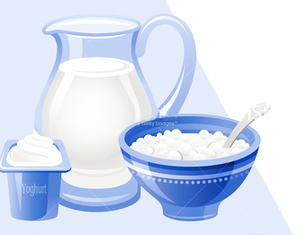
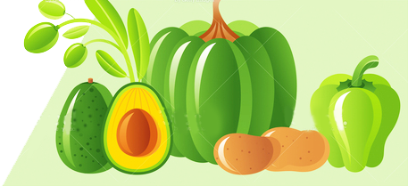

Milk, Yogurt, and Cheese
Why are milk products important?
Milk, yogurt, and cheese are the best source of calcium needed for healthy bones and teeth. Calcium is important during the teenage growth spurt and also for older adults. However foods on this shelf, especially full-fat cheese, can be high in saturated fat - so choose lower fat cheese regularly. When choosing foods from this shelf have milk and yogurt more often than cheese. If the family prefer skimmed milk, remember it is not suitable for children under 5. Low fat milk is not suitable for children under 2. If dairy products have to be avoided, have calcium and vitamin D enriched soya products. Vitamin D helps you absorb calcium better.
The Food Guide Pyramid suggests 2 to 3 servings of milk, yogurt, and cheese a day—2 for most people, and 3 for women who are pregnant or breastfeeding, teenagers, and young adults to age 24.
What counts as a serving?
1 serving is:
- 1 large glass (200ml) low fat or
low fat fortified milk
- 1 large glass (200ml) calcium
enriched Soya milk
- 1 small carton yogurt (125ml)
- 1 yogurt drink (200ml)
- 1 small carton fromage frais
- 25g/1oz (matchbox size piece)
of low fat cheddar or semi-soft
cheese
- 50g/2oz low fat soft cheese
- 2 processed cheese triangles
- 75g/3oz cottage cheese
- 1 portion of milk pudding made
with a large glass low fat milk
Here are some selection tips:
- Choose skim milk and non-fat yogurt often. They are lowest in fat.
- 1-1/2 to 2 ounces of cheese and 8 ounces of yogurt count as a serving from this group because they supply the same amount of calcium as 1cup of milk.
- Cottage cheese is lower in calcium than most cheeses. One cup of cottage cheese counts as only 1/2 serving of milk.
- Go easy on high fat cheese and ice cream.They can add a lot of fat (especially saturated fat) to your diet.
- Choose “part skim”or lowfat cheeses when available and lower fat milk desserts, like ice milk or frozen yogurt.
**Children aged 9-18 years need 5 servings a day.
Women who are pregnant or breastfeeding need 3 servings a day.





The Food Guide Pyramid ©
All rights reserved.
2016